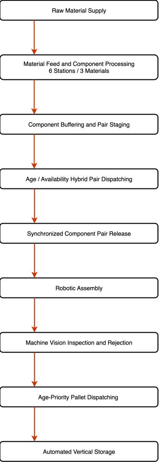
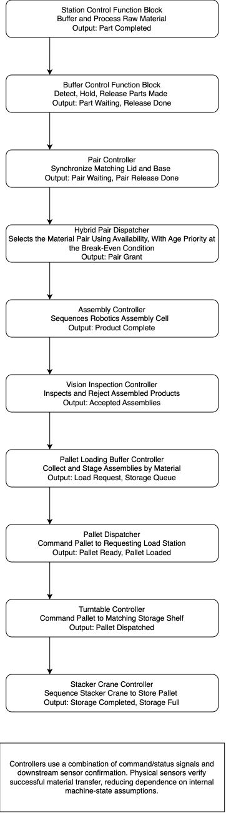

Material Processing
Six processing stations manufacture lid and base components from blue, green, and metal materials.
Industrial Automation
A modular Factory I/O production system integrating material processing, buffering, synchronized dispatch, robotic assembly, pallet handling, and automated vertical storage using CODESYS Structured Text.

Project Overview
The goal of this project was to design and program a complete automated production line rather than a collection of isolated machines. The system processes multiple material types, stores completed components in buffer lanes, selects ready production lanes for release, assembles matching parts, transfers finished products onto pallets, and stores them automatically.
The control system was written in CODESYS using Structured Text. Reusable function blocks and state machines were used to separate station control, buffering, synchronized pair release, dispatch, assembly, and storage logic.
Production Flow
The system moves raw materials through component processing, buffering, dispatch, assembly, inspection, pallet handling, and automated storage.

System Architecture
Six processing stations manufacture lid and base components from blue, green, and metal materials.
Dedicated buffer lanes detect waiting components and control stop blades and release conveyors.
Matching lid and base parts are released together only when both components are ready.
When multiple production lanes request access, the lane that has waited longest receives the next release grant.
A robotic assembly cell receives synchronized components and combines them into finished products.
Finished products are palletized, transferred, and placed into a vertical storage system.
PLC Architecture
The system is divided into local controllers that manage their own sequencing and sensing, while higher-level dispatchers coordinate material flow between subsystems.

Control Logic
The dispatcher selects which matching lid-and-base pair receives access to the assembly cell.
Pair availability is the primary selection criterion. The dispatcher compares the number of ready components in each material lane and prioritizes the pair with the strongest available supply.
When multiple lanes reach the defined break-even condition, an age-priority value resolves the tie. Waiting lanes accumulate priority, while the selected lane resets after receiving a release grant. This prevents one material type from being repeatedly delayed while still keeping availability as the main production decision.
The dispatcher only grants permission to release. Each pair controller remains responsible for verifying that both components are present and commanding the two buffers together.
(* Evaluate the blue material pair *)
IF BlueReady THEN
IF (BlueAvailable > BestScore)
OR
(
(BlueAvailable = BestScore)
AND (BlueAge > BestAge)
)
THEN
BestScore := BlueAvailable;
BestAge := BlueAge;
SelectedPair := 1;
END_IF;
END_IF;Each ready material pair is evaluated against the current best candidate. Available inventory is compared first. When two candidates have equal availability, the lane with the greater waiting age is selected.
The same comparison is repeated for the green and metal pairs, leaving
SelectedPair with the highest-priority valid candidate.
System Demonstration
These clips highlight synchronized component release, successful inspection flow, and failed-product rejection.
Matching lid and base components remain staged until both are ready and the selected pair receives a release grant. The two buffers then release together toward assembly.
A correctly assembled product passes inspection and continues along the accepted production path.
A failed assembly is detected and diverted away from the accepted downstream production path.
Engineering Focus
My work focused on PLC architecture, reusable control logic, sensor sequencing, synchronization, and communication between subsystems. The project required coordinating multiple state machines without allowing one station to interfere with another.
Particular attention was given to reliable release behavior, fair dispatch selection, sensor edge detection, timeout handling, and clear separation between local machine logic and higher-level production coordination.
Coming Next
The completed page will include the control architecture, function block design, dispatch algorithm, selected Structured Text code, engineering challenges, fault handling, and a full demonstration video.